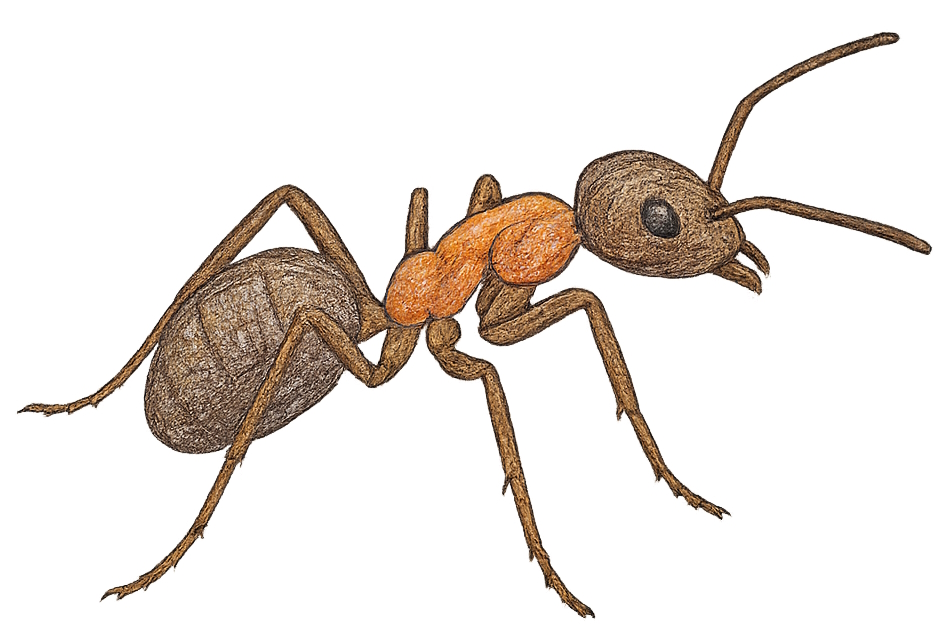
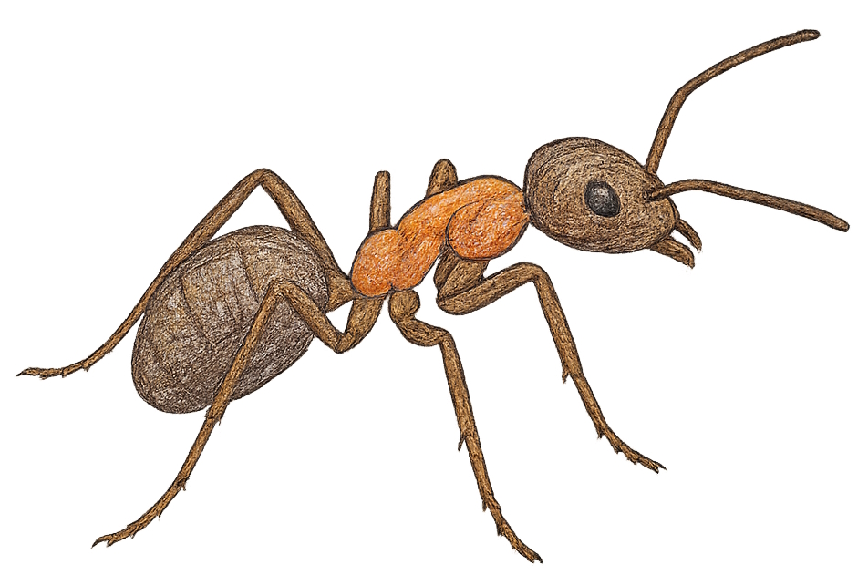

Allgemeines
Die Rote Waldameise gehört zu den bekanntesten Ameisenarten Mitteleuropas. Sie wird etwa 4 bis 9 Millimeter groß, Königinnen können bis zu 11 Millimeter erreichen. Arbeiterinnen wiegen nur wenige Milligramm, während die Königin deutlich schwerer ist. In der Natur können Königinnen bis zu 15 Jahre alt werden, Arbeiterinnen dagegen meist nur 2 bis 3 Jahre. Die Ameisen sind rotbraun gefärbt, mit einem dunklen Hinterleib und Kopf. Sie kommen vor allem in Europa und Teilen Asiens vor.
Lebensraum
Waldameisen leben, wie ihr Name schon verrät, überwiegend in Wäldern. Besonders wohl fühlen sie sich in lichten Nadel- und Mischwäldern, wo sie ihre großen Ameisenhügel aus Nadeln, Zweigen und Erde bauen. Diese Hügel können über einen Meter hoch werden und dienen als Schutz vor Feinden und Witterung. Man findet sie aber auch an Waldrändern, Lichtungen oder in Gebüschen.
Nahrung
Die Rote Waldameise ernährt sich vielseitig. Sie frisst kleine Insekten und andere Wirbellose, die sie im Wald jagt oder als Aas findet. Außerdem sammelt sie Honigtau von Blattläusen und nutzt Pflanzensäfte. Für den Wald ist sie sehr nützlich, da sie viele Schadinsekten vertilgt. Zu ihren Feinden gehören Vögel, Spinnen, Ameisenbären (in anderen Regionen) sowie auch andere Ameisenarten, die ihre Nester angreifen können.
Besonderheiten
Das Leben der Waldameisen ist stark organisiert. In einem Ameisenstaat können 100.000 bis 700.000 Arbeiterinnen und bis zu fünf Königinnen zusammenleben. Die Tiere teilen sich ihre Aufgaben: Es gibt Arbeiterinnen, die den Nachwuchs pflegen, andere sammeln Nahrung, wieder andere verteidigen den Bau. Auch Blattläuse werden „gemolken“, um an den süßen Honigtau zu kommen. Männchen gibt es nur wenige, ihre einzige Aufgabe ist es, sich mit den Königinnen zu paaren. Ein Ameisenstaat funktioniert wie eine perfekt eingespielte Gemeinschaft.
Gefährdung und Schutz
Die Rote Waldameise ist in vielen Ländern geschützt, da sie eine wichtige Rolle im Waldökosystem spielt. Sie sorgt dafür, dass Schädlinge im Zaum gehalten werden und trägt zur Verbreitung von Pflanzensamen bei. In Deutschland steht sie unter strengem Naturschutz, weshalb ihre Nester nicht zerstört oder umgesetzt werden dürfen. Gefährdet ist die Art vor allem durch die Zerstörung ihrer Lebensräume, etwa durch intensive Forstwirtschaft oder Bauarbeiten.
Zurück zur Startseite